Ngữ văn 12 · Nói và nghe
Kim Lân
❦
Vợ nhặt
in trong tập Con chó xấu xí
Một người được nhặt
về làm vợ.
…và cả hai
Nhóm 4
❦
Nói và nghe
So sánh & đánh giá hai tác phẩm truyện
Lê Đức Đăng Khoa
Trần Hoàng Quân
Ngữ văn 12 · Nói và nghe
Kim Lân
❦
in trong tập Con chó xấu xí
Một người được nhặt
về làm vợ.
…và cả hai
So sánh & đánh giá hai tác phẩm truyện
Tô Hoài
❦
in trong tập Truyện Tây Bắc
Một người bị bắt
về làm vợ.
vẫn muốn sống.
I · Giới thiệu vấn đề so sánh
Vợ nhặt Kim Lân
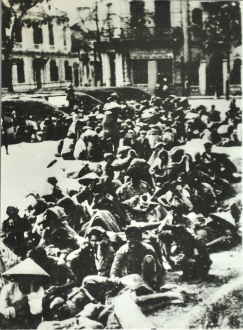
Viết về nạn đói năm 1945 và số phận người nông dân nghèo.
Nổi bật
I · Giới thiệu vấn đề so sánh
Vợ chồng A Phủ Tô Hoài
Viết về cuộc sống người dân miền núi dưới ách áp bức.
Nổi bật
So sánh điểm tương đồng và khác biệt về nội dung và nghệ thuật
I · Khái quát hai tác phẩm
Vợ nhặt truyện ngắn
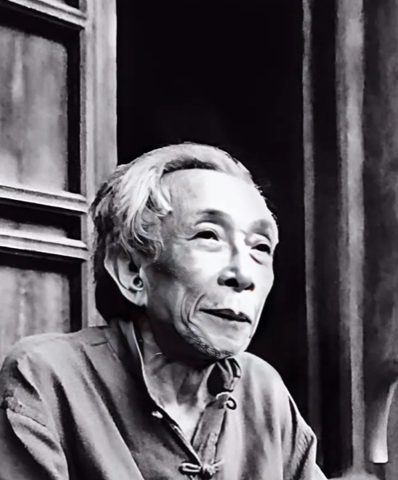
1920 – 2007
nhà văn của nông thôn
và người nông dân
I · Khái quát hai tác phẩm
Vợ chồng A Phủ truyện ngắn
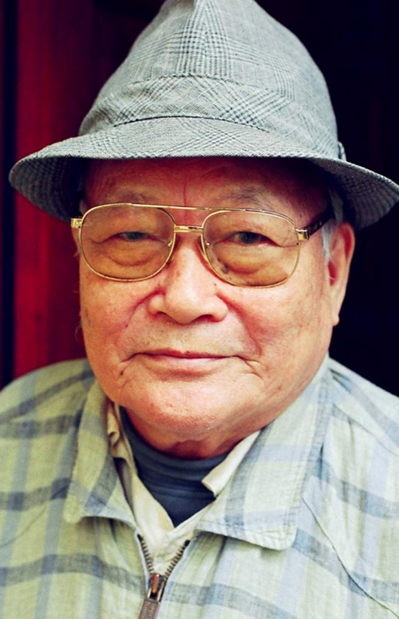
1920 – 2014
người đưa miền núi
vào trang văn
I · Khái quát hai tác phẩm
Vợ nhặt cốt truyện
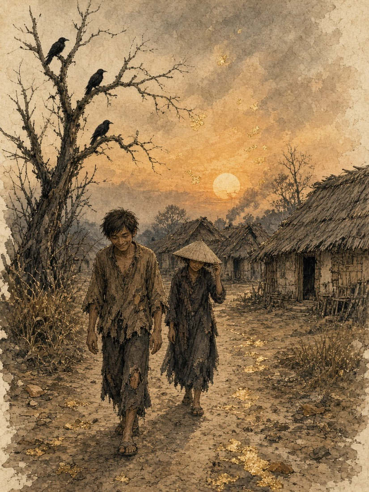
I · Khái quát hai tác phẩm
Vợ chồng A Phủ cốt truyện
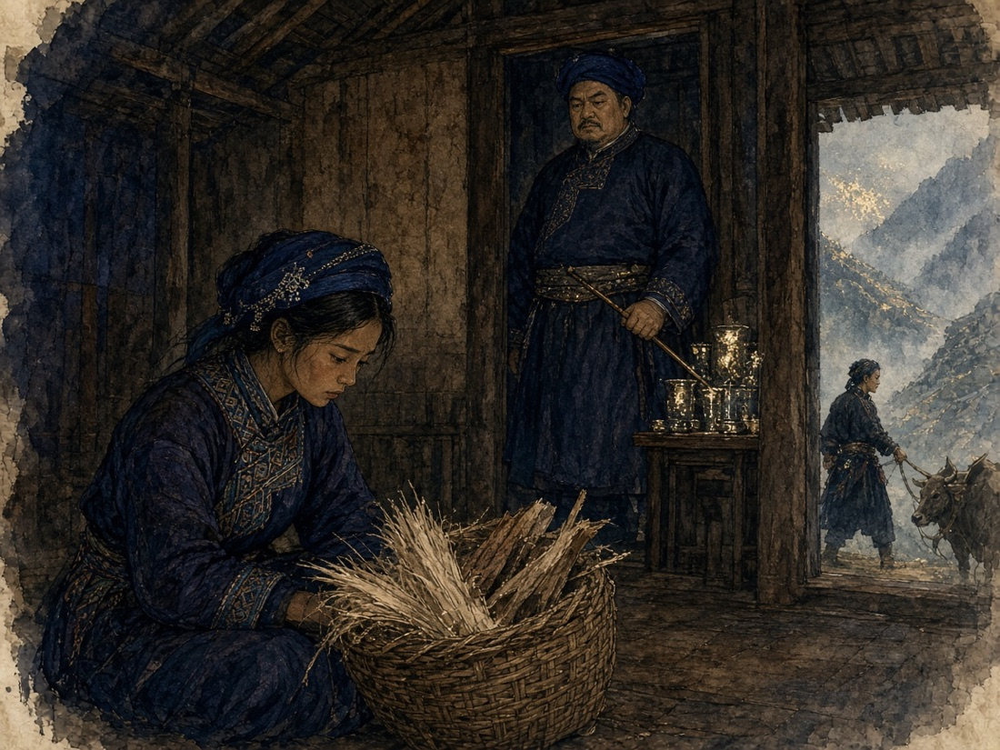
còn tiếp…
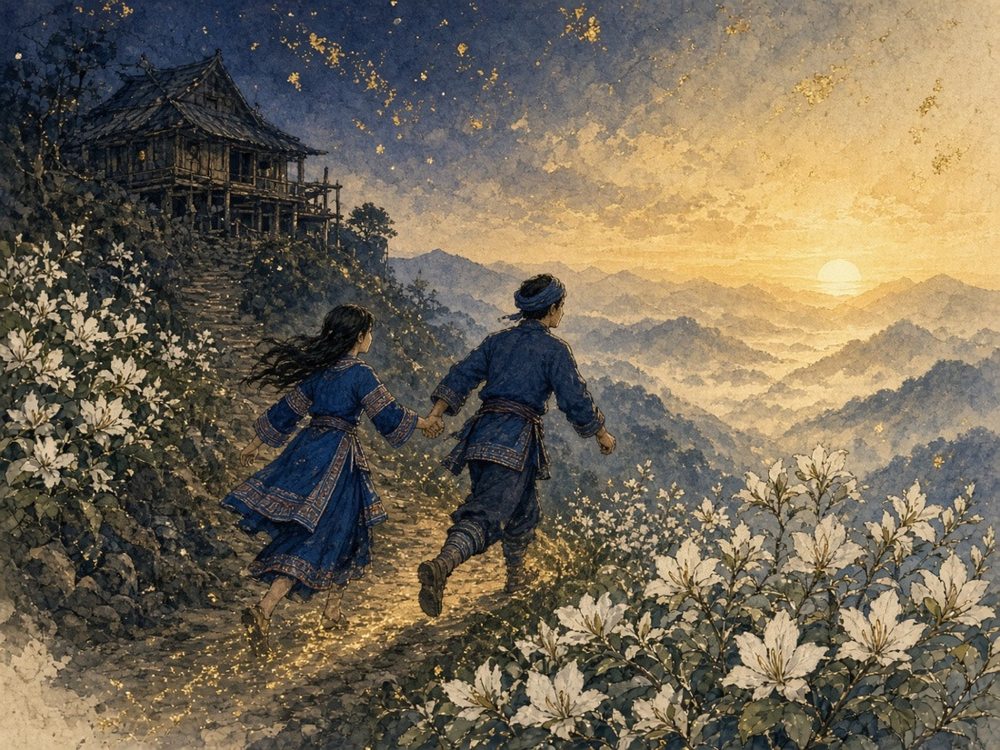
I · Xác định phương diện so sánh
Những phương diện dùng để đặt
hai tác phẩm cạnh nhau
Vợ nhặt✦Vợ chồng A Phủ
I · Xác định phương diện so sánh
Mục lục
Tương đồng · Khác biệt · Lý giải · Đánh giá
II · Điểm tương đồng
II
về nội dung và nghệ thuật
II · Điểm tương đồng
Trong chương này
II · Điểm tương đồng
Vợ nhặt đề tài · chủ đề
II · Điểm tương đồng
Vợ chồng A Phủ đề tài · chủ đề
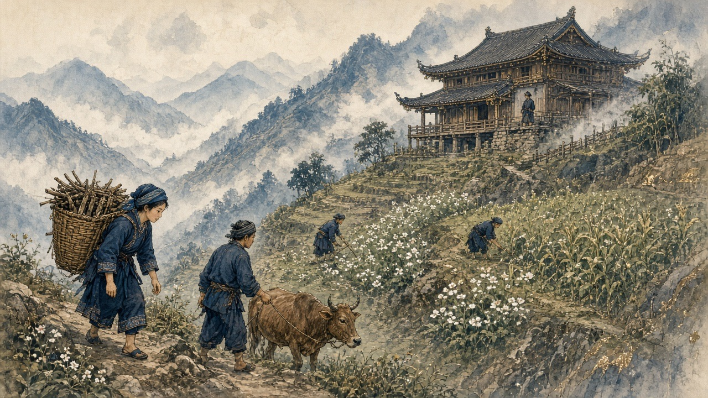
Đề tài: cùng viết về người lao động nghèo trong xã hội cũ
Chủ đề: số phận đau khổ · sức sống tiềm tàng · khát vọng hạnh phúc, tự do
II · Điểm tương đồng
Vợ nhặt số phận
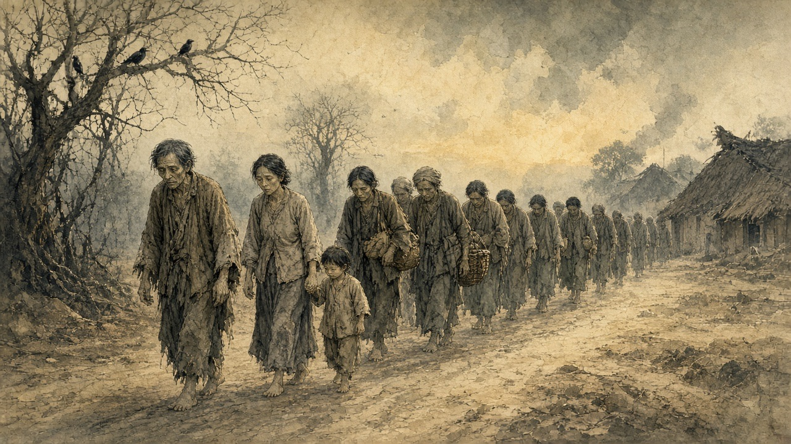
Cảnh nạn đói…
Người đói xanh xám như những bóng ma.”
II · Điểm tương đồng
Vợ chồng A Phủ số phận
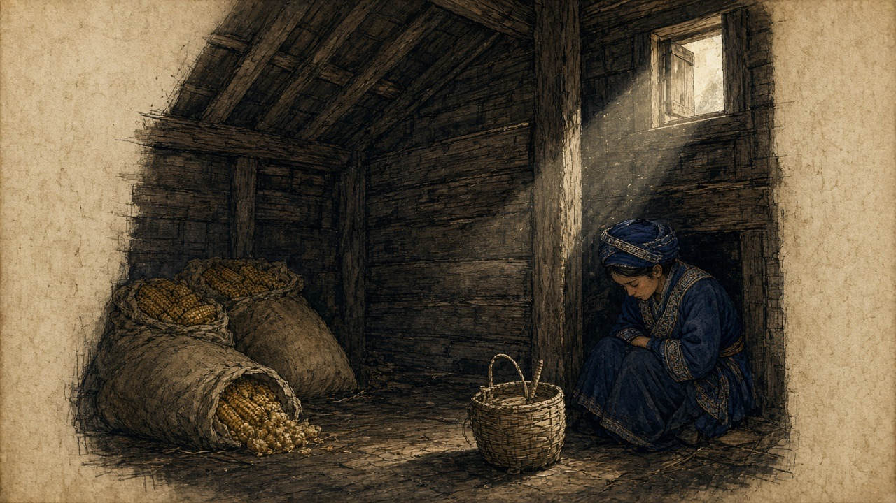
Mị sống…
lùi lũi như con rùa nuôi trong xó cửa.”
Người lao động nghèo: số phận bất hạnh nhưng giàu sức sống, phẩm chất tốt đẹp
Số phận: chịu nhiều đau khổ, bị đẩy vào hoàn cảnh khốn cùng
II · Điểm tương đồng
Vợ nhặt phẩm chất
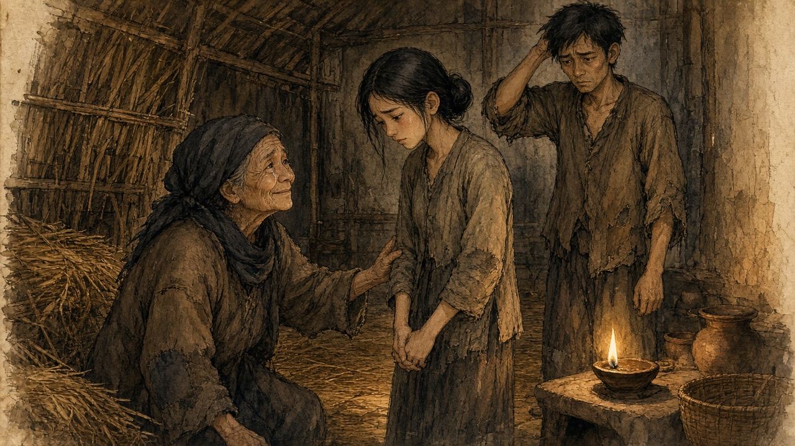
Bà cụ Tứ đón nhận nàng dâu giữa ngày đói:
U cũng mừng lòng.”
II · Điểm tương đồng
Vợ chồng A Phủ phẩm chất
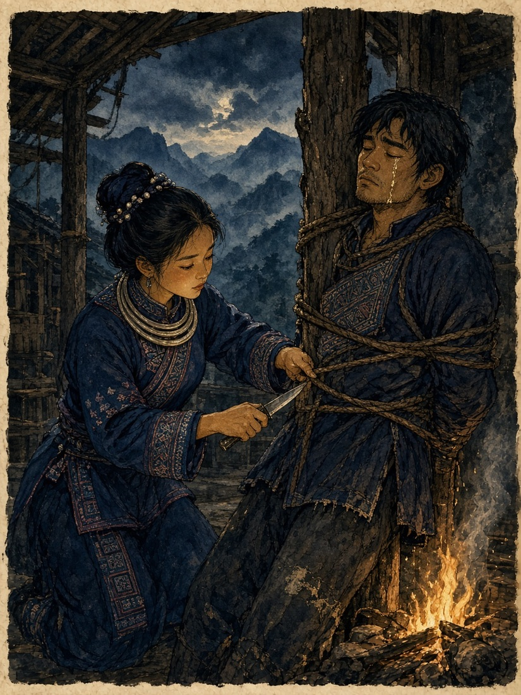
Mị nhìn thấy nước mắt A Phủ và quyết định cắt dây trói cứu anh:
Mị cũng không sợ nữa.”
Giàu tình yêu thương, sức sống, khát vọng hạnh phúc
II · Điểm tương đồng
Vợ nhặt vẻ đẹp nhân vật
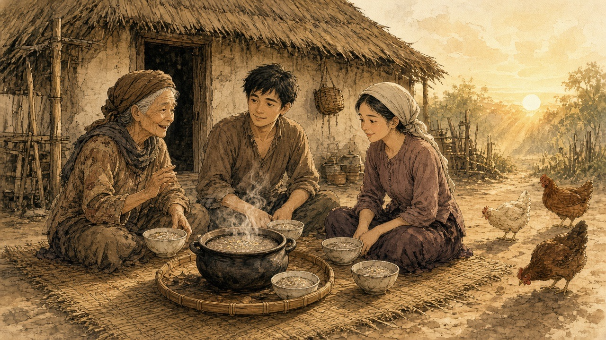
Bữa cơm ngày đói chỉ có nồi cháo cám…
…nhưng mọi người vẫn nói chuyện tương lai.
II · Điểm tương đồng
Vợ chồng A Phủ vẻ đẹp nhân vật
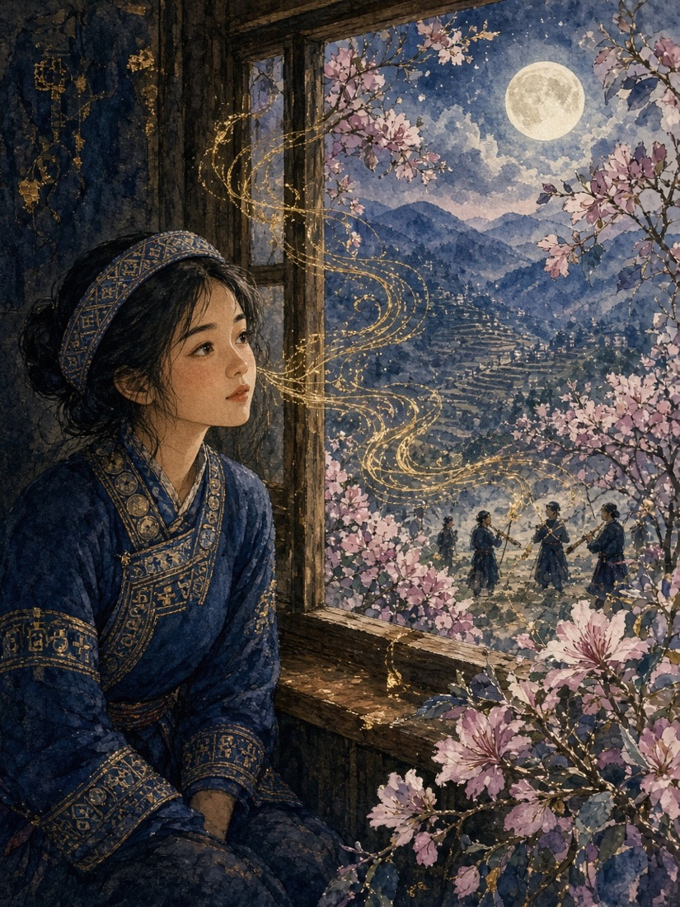
Vẻ đẹp tâm hồn, tình người và khát vọng vươn lên tới cuộc sống tốt đẹp hơn
II · Điểm tương đồng
Vợ nhặt giá trị
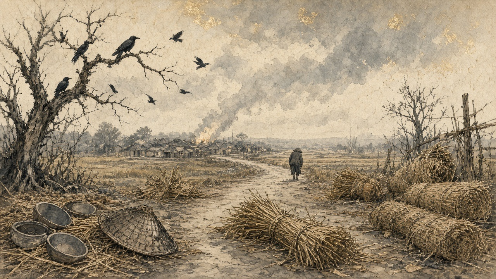
II · Điểm tương đồng
Vợ chồng A Phủ giá trị
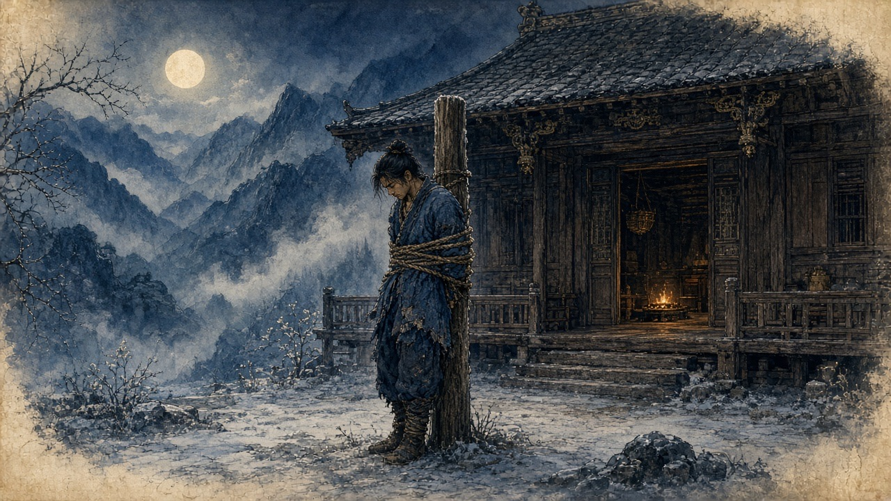
Giá trị hiện thực: tố cáo xã hội bất công, tàn bạo
Giá trị nhân đạo: cảm thương số phận con người, trân trọng phẩm chất tốt đẹp
II · Điểm tương đồng · Nghệ thuật
Cả hai tác phẩm cách kể
Vợ nhặt✦Vợ chồng A Phủ
II · Điểm tương đồng · Nghệ thuật
Cả hai tác phẩm giọng điệu
Kết hợp giọng điệu
…những phẩm chất tốt đẹp.
II · Điểm tương đồng · Nghệ thuật
Vợ nhặt kết cấu
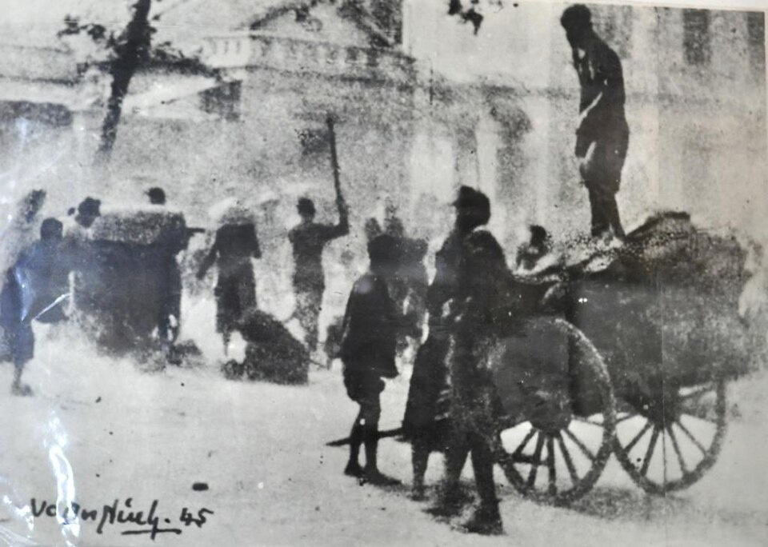
Dẫn chứng: hình ảnh lá cờ đỏ ở cuối truyện.
II · Điểm tương đồng · Nghệ thuật
Vợ chồng A Phủ kết cấu
Dẫn chứng: Mị và A Phủ rời khỏi Hồng Ngài.
Từ hoàn cảnh đau khổ, éo le đến chuyển biến trong nhận thức, tâm trạng, số phận
II · Điểm tương đồng · Nghệ thuật
Vợ nhặt nhân vật
Khắc họa qua ngoại hình, hành động, lời nói và đặc biệt là diễn biến tâm lí:
II · Điểm tương đồng · Nghệ thuật
Vợ chồng A Phủ nhân vật
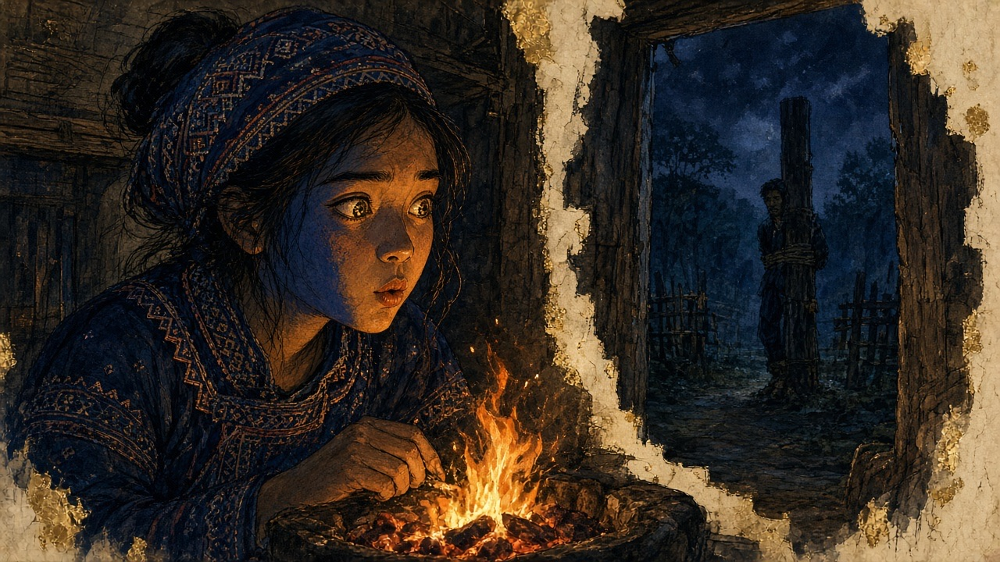
Đặc biệt thành công trong miêu tả tâm lí Mị qua những biến chuyển:
Khắc họa qua ngoại hình, hành động, lời nói, tâm lí và diễn biến nội tâm
II · Điểm tương đồng · Nghệ thuật
Vợ nhặt ngôn ngữ
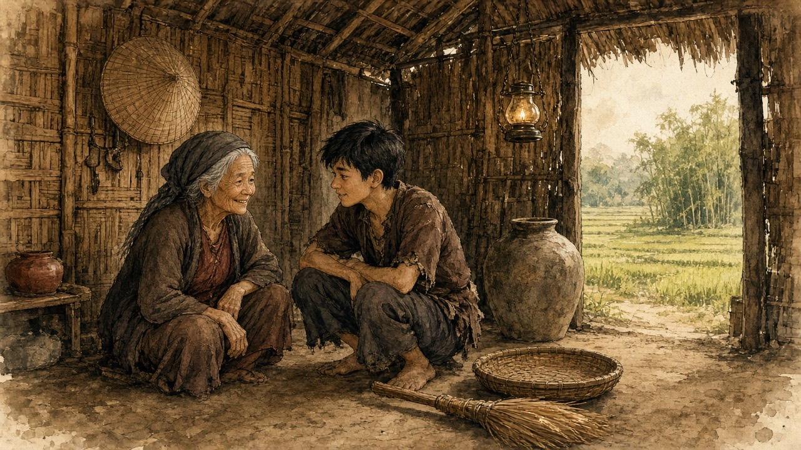
Đậm chất khẩu ngữ của người nông dân Bắc Bộ.
II · Điểm tương đồng · Nghệ thuật
Vợ chồng A Phủ ngôn ngữ
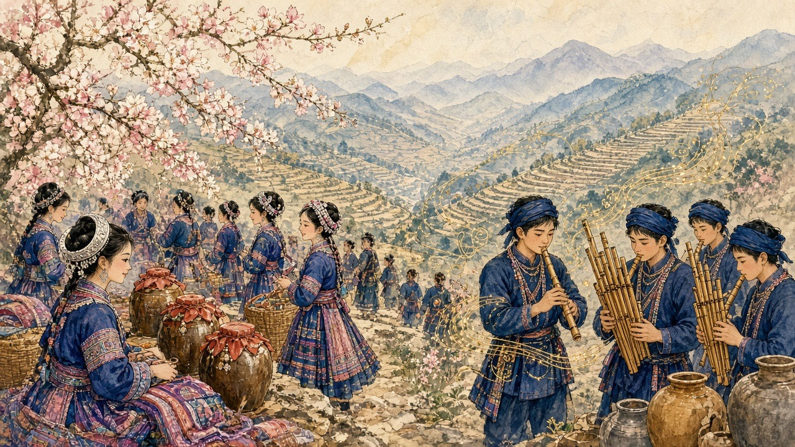
Giàu màu sắc dân tộc và miền núi Tây Bắc.
Giản dị, gần gũi với đời sống, đậm màu sắc của từng vùng miền
III · Điểm khác biệt
III
mỗi tác phẩm một con đường
III · Điểm khác biệt
Trong chương này
III · Điểm khác biệt
Vợ nhặt chủ đề · số phận
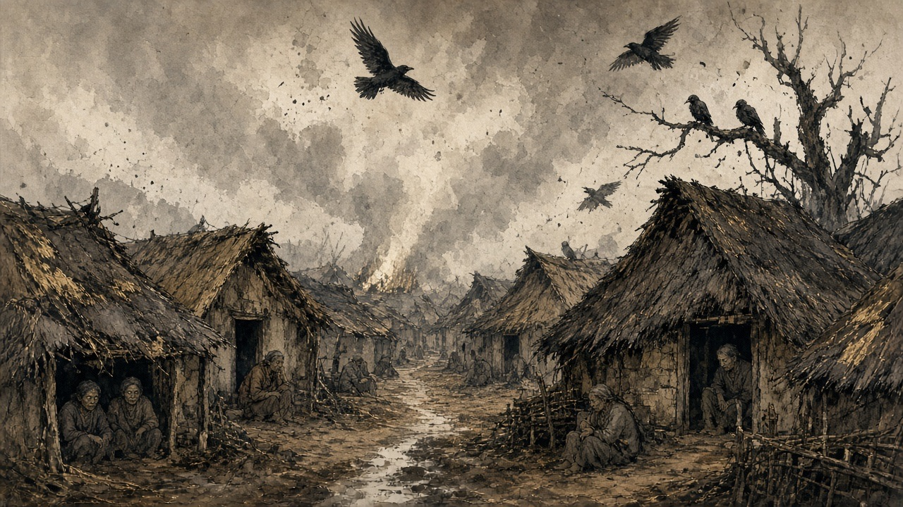
III · Điểm khác biệt
Vợ chồng A Phủ chủ đề · số phận
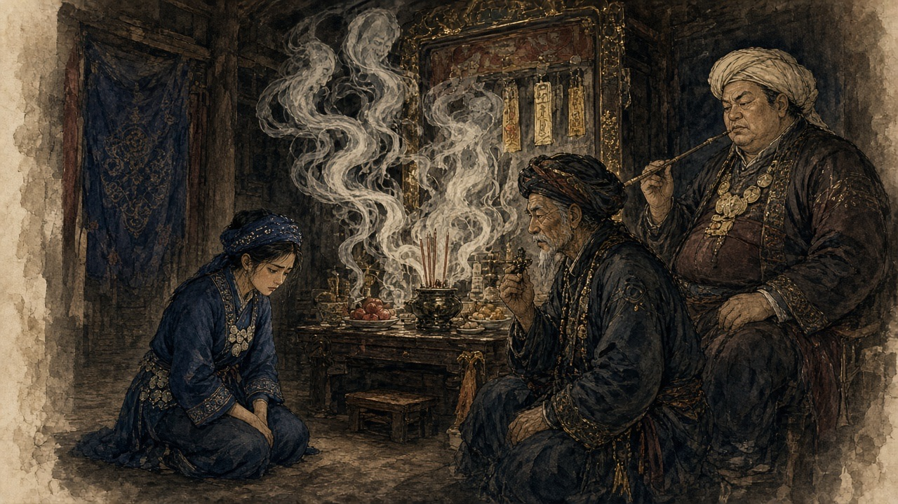
III · Điểm khác biệt
Vợ nhặt diễn biến tâm lí
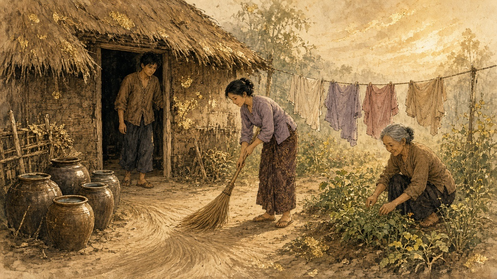
Hướng tới tương lai, mái ấm gia đình.
III · Điểm khác biệt
Vợ chồng A Phủ diễn biến tâm lí
III · Điểm khác biệt
Vợ nhặt giá trị
III · Điểm khác biệt
Vợ chồng A Phủ giá trị
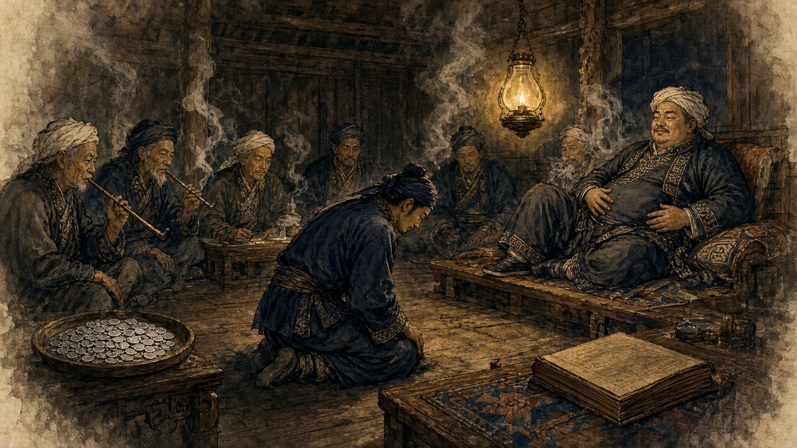
III · Điểm khác biệt · Nghệ thuật
Vợ nhặt nghệ thuật
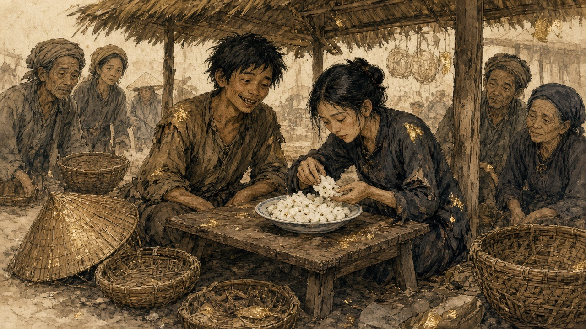
III · Điểm khác biệt · Nghệ thuật
Vợ chồng A Phủ nghệ thuật
III · Điểm khác biệt · Nghệ thuật
Vợ nhặt nghệ thuật
thời gian ngắn · xóm ngụ cư chật hẹp
III · Điểm khác biệt · Nghệ thuật
Vợ chồng A Phủ nghệ thuật
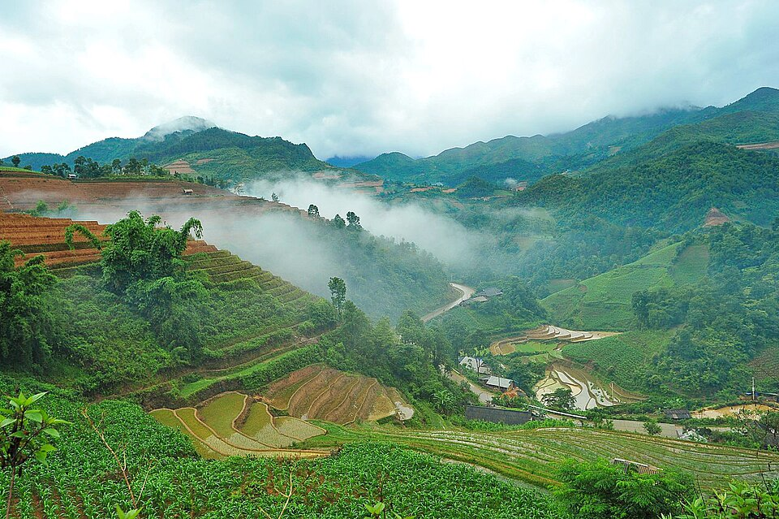
thời gian dài · núi rừng rộng lớn
IV · Lý giải
IV
sự tương đồng và khác biệt
IV · Lý giải
Trong chương này
IV · Lý giải · Tương đồng
Vợ nhặt Kim Lân
nhà văn của nông thôn
IV · Lý giải · Tương đồng
Vợ chồng A Phủ Tô Hoài
người đưa miền núi vào trang văn
1 · Cùng hướng ngòi bút vào người lao động nghèo
2 · Cùng chịu ảnh hưởng từ hiện thực xã hội khắc nghiệt
3 · Cùng đề cao giá trị con người và cảm hứng nhân đạo
IV · Lý giải · Khác biệt
Kim Lân vốn sống
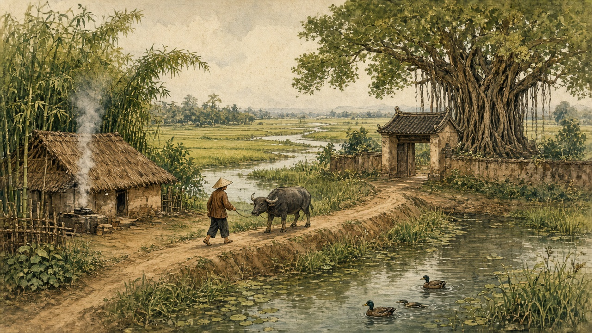
IV · Lý giải · Khác biệt
Tô Hoài vốn sống
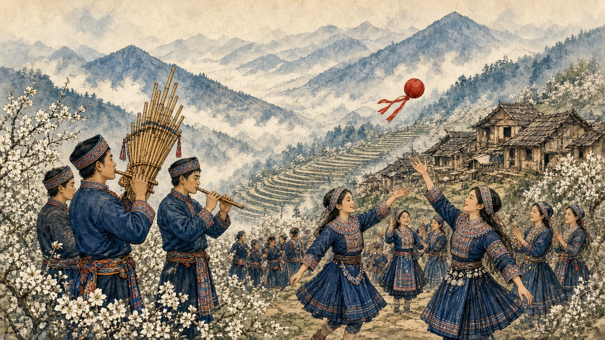
V · Đánh giá
V
giá trị và đóng góp
V · Đánh giá
Trong chương này
V · Đánh giá · Điểm gặp gỡ
Vợ nhặt tư tưởng
Giữa nạn đói, con người vẫn khao khát hạnh phúc, mái ấm.
V · Đánh giá · Điểm gặp gỡ
Vợ chồng A Phủ tư tưởng
Từ kiếp nô lệ, con người vùng lên giành lấy tự do.
Cùng phản ánh hiện thực đau khổ, thể hiện giá trị nhân đạo sâu sắc
Đều khẳng định phẩm giá, sức sống và khát vọng hạnh phúc, tự do
V · Đánh giá · Nét độc đáo
Vợ nhặt nét riêng
V · Đánh giá · Nét độc đáo
Vợ chồng A Phủ nét riêng
Độc đáo
V · Đánh giá · Nét độc đáo
Vợ nhặt nét riêng
Niềm hy vọng
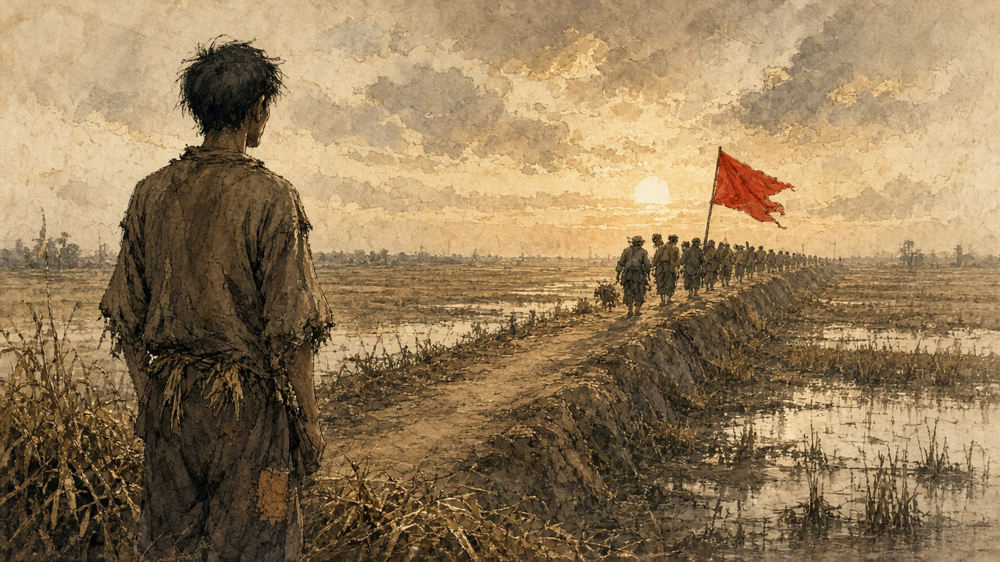
Phong cách
V · Đánh giá · Nét độc đáo
Vợ chồng A Phủ nét riêng
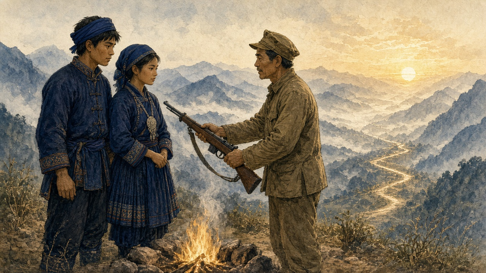
Gắn số phận cá nhân với con đường đến với cách mạng.
Phong cách
Độc đáo
V · Đánh giá · Giá trị và sức sống
Cả hai tác phẩm giá trị hiện thực
Sâu sắc
Giúp người đọc hiểu về những giai đoạn đau khổ của người lao động.
V · Đánh giá · Giá trị và sức sống
Cả hai tác phẩm giá trị nhân đạo
Bền vững
Khẳng định phẩm giá, tình yêu, khát vọng sống và hạnh phúc của con người.
V · Đánh giá · Đóng góp
Kim Lân đóng góp
V · Đánh giá · Đóng góp
Tô Hoài đóng góp
Kết
Kim Lân
❦
tình người · mái ấm · hy vọng
Giữa nạn đói, tình người
vẫn thắp lên hy vọng.
Hai cảnh đời,
Kết
Tô Hoài
❦
thức tỉnh · tự giải phóng · cách mạng
Giữa áp bức, con người
tự giải phóng chính mình.
một khát vọng sống.
❦
Cảm ơn
thầy cô và các bạn
đã lắng nghe
Vợ nhặt · Vợ chồng A Phủ
Nhóm 4